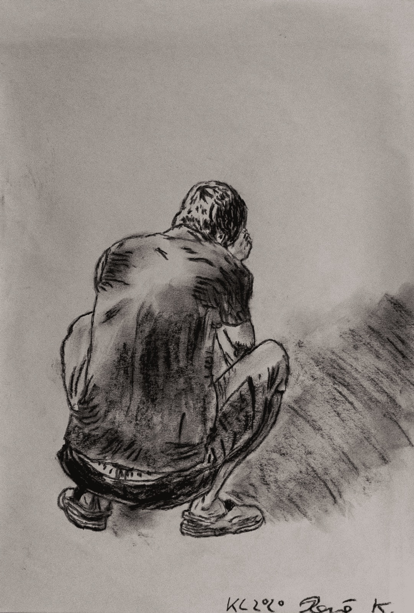
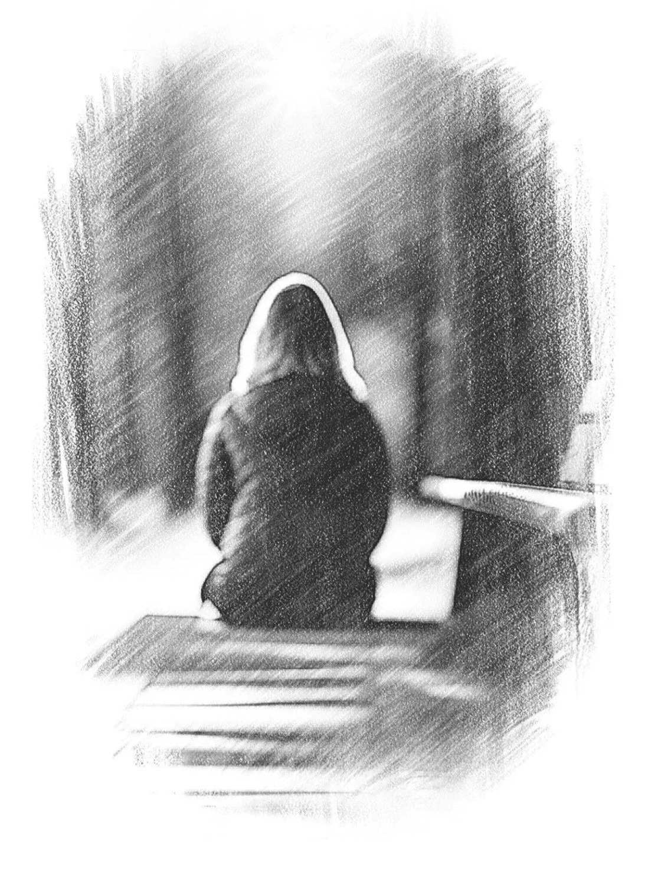
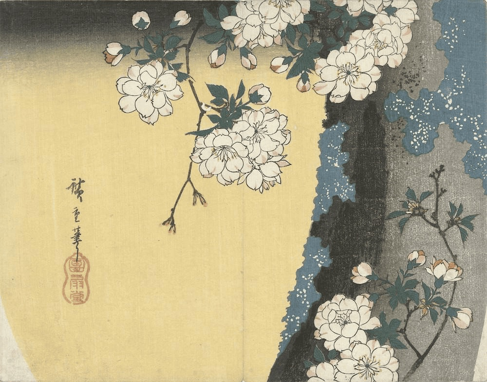
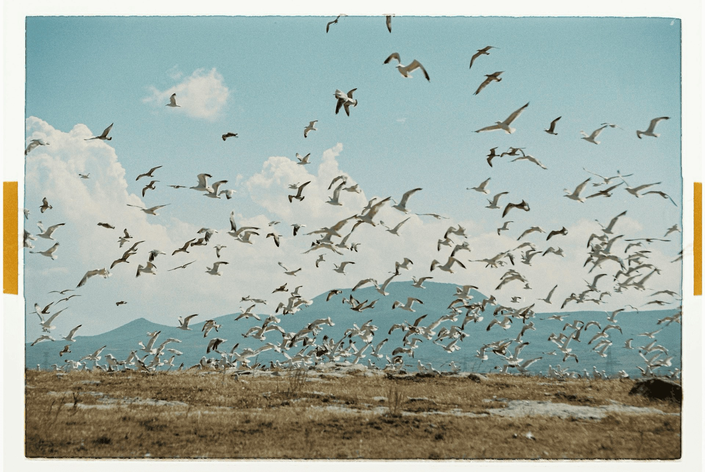

A Message from the President
Welcome to the first issue of De Vine, Psychedelics in Recovery's newsletter. I'm grateful you're here.
How do we talk honestly about recovery?
PIR® was born from a simple but difficult question: How do we talk honestly about recovery in a world where psychedelics are increasingly visible, medicalized, politicized, and misunderstood—without losing our integrity or one another? Over the years, our fellowship has grown into a diverse, sometimes imperfect, and deeply committed community wrestling with that question together.
This newsletter is an extension of that effort. De Vine is not a platform for promotion, persuasion, or dogma. It is a space for reflection, accountability, service, and shared learning. You'll find reports from service bodies, creative work emerging from the fellowship, and thoughtful engagement with recovery, integration, and the responsibilities that come with both.
Our task is not to eliminate disagreement
Growth brings complexity. As PIR® expands across geographies, modalities, and viewpoints, we are continually challenged to balance openness with safety, innovation with humility, and individual experience with collective care. These tensions are not signs of failure; they are signs that something alive is being tended. Our task is not to eliminate disagreement, but to remain grounded in respect, transparency, and a shared commitment to recovery.
Whether you are new to PIR® or have been walking with us for years, I invite you to see this publication as a conversation rather than a conclusion. Read closely. Question thoughtfully. Serve where you are able. And remember that none of us carries this work alone.
Thank you to the PR Committee and all contributors who brought this first issue into being. I look forward to what we will continue to grow—together.
In service,
Kevin Franciotti
Letter from the Editor
I'm honored to present the first edition of De Vine, Psychedelics in Recovery's monthly newsletter. When I joined PIR® in Fall 2025, I volunteered to launch this newsletter despite knowing I'm a habitual procrastinator.
If you're reading this, I've chosen to overcome procrastination for this project because the opportunity to include my voice in the community of PIR at this foundational time is too unique to pass up.
I have found myself in PIR because my experiences of addiction and recovery no longer align with the traditional 12-step narrative. I learned quickly when I started attending 12-step meetings that I had to identify with the core tenants of the fellowship if I wanted to be included in the community, much less recover. I chose to interpret my substance abuse through their lens and act with their methods as long as this alleviated my addiction and loneliness.
It remained that I had sacrificed essential truths about myself to be a part of the traditional recovery community. I was stuck in a dangerous conundrum—if I could not be honest within my community, I could not recover with them. Yet alone, I lacked the power to recover at all.
Being true to myself today is taking on the challenging task of defining my own recovery. Thankfully, I have found a community of people, who like myself, have dared to start on this journey. No one knows how challenging it is to go outside of the trodden path until they have done so—and here, we find ourselves, as a group, somehow making room for each other on the road less traveled.
There is a stark similarity between democratic communities that allow debate and the dialogic process that individuals undergo when recovering. Recovery itself is a challenging of thoughts, beliefs, and ideals that are no longer working. We need each other—and we need disagreement just as much as we need agreement—for our recovery process to adapt to the inevitable changes any community will face.
Thank you for joining me here—I hope you'll join the conversation.
Step 1: A Human Problem
We admitted we were powerless over our patterns — that our lives had become unmanageable.
Before the drink, before the scroll, before the affair, before the apology you half-meant and the promise you couldn't keep—there may lie a quieter ache.
I don't feel whole.
I don't feel enough.
I don't feel safe in my own skin.
I don't feel okay.
And when "not okay" becomes home, we're liable to go to great lengths to change that.
The Fix
So we learn strategies. Some are chemical. Some are relational. Some are spiritual-looking. Some are impressively productive. Addiction says: Change my state. Control says: Change your state so I can breathe. Fawning says: Let me become what you want before you decide I'm not wanted. Perfection says: Let me earn my right to exist. Withdrawal says: Let me disappear until it's safe to be seen.
These aren't born from malice. They're born from urgency. They're homemade medicine. They work fast. They work short. They work—until they don't.

The Quiet Erosion
Then comes the part no one plans for: We cross lines we once swore were uncrossable. Not with fireworks. With footnotes. Just this once. Just tonight. Just until the anxiety passes. And then we move the line to make room for the crossing.
That's when integrity starts to hurt. Not because we broke a rule—but because we broke contact with the person we wanted to be. Integrity isn't moral superiority. It's internal coherence. It's being in one piece. And this is the tragedy: the very thing we do to feel okay is what makes us feel less okay.
Stop Negotiating
Step One is not a scolding. It's not a courtroom. It's not a badge of shame. It's an opening. It's the moment we decide to stop negotiating with reality. Powerlessness doesn't mean helplessness. It means: this approach cannot deliver what it promises. Acceptance doesn't mean approval. It means: this is what is happening. Asking for help doesn't mean weakness. It means: I'm done pretending I can do this alone.
Step One is not "I am broken." It's: "My strategy for wholeness is breaking me."
Unmanageability
Unmanageability isn't always chaos on the outside. Sometimes it's a polished life with a private war inside it. It's the constant math: How much can I do before it costs me? It's the hidden bargaining, the countdown clocks, the secret rules, the exhausting maintenance of a self that can't rest. It's the way the world gets smaller as you try harder to keep it under control.

The Promise
Step One does not make you small. It makes you real. And reality—as brutal as it can be—is the only ground that can hold transformation. This is the beginning of becoming whole: not by forcing yourself into perfection, but by ending the argument with what is.
Help me admit what isn't working without turning it into shame.
Show me where I rationalize, and give me the courage to stop calling it freedom.
"Finding a Way Home"
A review of Justin Smith-Ruiu's On Drugs: Psychedelics, Philosophy, and the Nature of Reality
"Is it me, the drugs, or God?" This seems a relatively common question in psychedelic communities, especially in psychedelic recovery communities. Do psychedelics inspire connection with spirit, connect us more deeply to ourselves, or just offer a transient high? Justin Smith-Ruiu's On Drugs explores this complex question through seven chapters using two primary lenses: personal experience and philosophical interrogation.
Ruiu's early chapters are a personal accounting of the depression and drinking that brought him "back" to psilocybin as medicine as opposed to recreational drug. This vignette is followed by a tour of the current psychedelic landscape, where the author posits interesting questions about everything from the pharmaceutical acquisition of psychedelics to whether microdosing actually misses the point by circumventing the awe of a "full" psychedelic experience.

The book is thorough, well-reasoned, and rational. Near the end, the author writes: "Psychedelic drugs…cannot provide a shortcut to enlightenment…Rather…they may provide…a valuable analogy of enlightenment." Smith-Ruiu's sentiments reveal that, possibly, he has found his way "home." Readers of Joseph Campbell, the PIR® homepage, and those who use plant medicines as tools for healing will feel a sense of camaraderie in the closing pages.
— David M., reviewing On Drugs
On Psychedelic Augmentation of 12-Step Engagement
In November 2025, a peer-reviewed article was published in the Journal of Psychoactive Drugs examining a phenomenon that many in our community have been living for years: the intentional integration of psychedelic experiences with 12-Step recovery. Titled "Psychedelic Augmentation of 12-Step Engagement: A Novel, Accessible Approach to Enhance Community-Based Recovery from Substance Use Disorders," the study represents one of the first empirical efforts to document this emerging practice in real-world settings.
Importantly, this research did not emerge in a vacuum. Participants were intentionally recruited through a community partner with lived experience—members connected to Psychedelics in Recovery™ and adjacent 12-Step networks—underscoring a central truth: much of the innovation in recovery is happening outside of clinics, ahead of formal systems, and in response to unmet needs.
Why This Study Matters
The study was small by design. Due to federal research constraints, the final sample included eight individuals in remission from alcohol, opioid, and/or stimulant use disorders. The authors are explicit that the findings are exploratory and not generalizable. But what the study lacks in scale, it makes up for in depth.
Participants described using psychedelics such as psilocybin, ayahuasca, ibogaine, peyote, and others in conjunction with—not instead of—12-Step engagement. For some, psychedelics helped them finally engage with the Steps after repeated failed attempts. For others, they addressed persistent psychological distress that lingered despite long-term abstinence and diligent program participation.
Psychedelics as a Catalyst, Not the Container
One of the most compelling findings was how participants described the synergy between psychedelic experiences and specific 12-Step practices. Psychedelics appeared to facilitate openness to Step 2 (belief in a Higher Power), deepen moral inventory work in Step 4, and enrich contemplative practices aligned with Step 11. Several participants used vivid metaphors: psychedelics as the "engine," the Steps as the "transmission."
Where PIR® Fits In
Psychedelics in Recovery™ did not set out to prove a model. PIR® emerged to meet people where they already were—navigating recovery, curiosity, skepticism, hope, and risk in equal measure. This study validates that community-based wisdom deserves careful attention, not dismissal or romanticization.
The findings do not offer simple answers. They offer something more valuable: grounded questions for future research, policy, and community practice. As the authors conclude, further research is urgently needed. PIR® is proud to have contributed—carefully, ethically, and transparently—to that ongoing conversation.
Open Service Positions
See Karen, chair of GSR, if you are interested in any of the positions.
| Role | Group / Committee | Description | Schedule |
|---|---|---|---|
| WhatsApp Community Moderators | PR Committee | Ensuring adherence to traditions in WhatsApp Chat | Ongoing |
| GSR | Saturday Ramen | Attend area; Lead group business meetings | Every Saturday 1600 PST / 0000 GMT |
| Co-Chair | Saturday Ramen | Tech co-host; monitor chats; provide reading materials | Every Saturday 1600 PST / 0000 GMT |
| GSR | Friday Night Topic / Discussion | Attend area; Lead group business meetings | Every Friday 1700 PST / 0100 GMT |
| Tech-Host | Friday Night Topic / Discussion | Tech co-host; monitor chats; provide reading materials | Every Friday 1700 PST / 0100 GMT |
| Greeter | Friday Night Topic / Discussion | Arrive 10 minutes early; Greet meeting attendees on Zoom | Every Friday 1700 PST / 0100 GMT |
In the last three months, the PR Committee has been very active, focusing its efforts on two key projects: the Newsletter and the Podcast.
The Newsletter, edited by Katherine, has now launched and is the publication you are currently reading. It is designed to keep the fellowship informed, connected, and inspired, while sharing updates from across PIR® and the wider recovery and psychedelic integration community.
In parallel, the committee has been developing a new podcast, PIR® Integration Radio, hosted by Anne, which is due to launch later this month. The podcast will begin with a series of interviews titled Journeys of Healing, offering personal stories of recovery and integration.
Alongside these projects, the PR Committee has begun building PIR's social media presence. Accounts have now been created across all major platforms. If you are interested in supporting PIR's outreach and communications work, please get in touch at pr@psychedelicsinrecovery.org
As Psychedelics in Recovery™ enters 2026, the Literature Committee (LitCom) is grateful to share an update on the work completed over the past year and the service we are continuing to build together.
We closed out 2025 with the successful publication of updated member materials and FAQs on PIR®'s newly launched website. Following PIR®'s newly registered trademark status, LitCom has begun the careful process of updating existing literature to reflect trademark alignment.
We are also excited to formally establish LitCom's presence on the new Service Page subdomain and within the Fellowship's newsletter. LitCom warmly welcomes volunteers who feel called to support this service—whether through reviewing drafts, offering feedback, or helping bridge communication between groups and committees. No special expertise is required—only a willingness to listen, collaborate, and serve with humility.
We are a project organized for the purpose of fulfilling the mission of editing and publishing PIR's first book. We changed from the "committee" model to a "project" model. We distributed the editor's edition of the book in .pdf format in October 2025. Due to complications in the publication process, we have been delayed in releasing the book in accessible formats to the fellowship it was written for.
As we are now in the final stages of editing the book, the Book Committee is no longer seeking volunteers. Email forapirbook@gmail.com for information.
A substantial portion of recent GSR meetings centered on Tradition-based discussions, with particular attention to Tradition 11, anonymity, and appropriate public representation of PIR. GSRs shared experiences from their meetings that reflected varying interpretations and concerns around privacy, safety, and language used in both in-meeting and public-facing contexts.
Recent meetings saw a noticeable increase in attendance, signaling heightened engagement and a strong desire from the groups to be heard and better informed. To improve transparency and information flow, the GSR Subcommittee voted to formally bring subcommittee reports back to the GSR body on a regular basis.
Announcements
